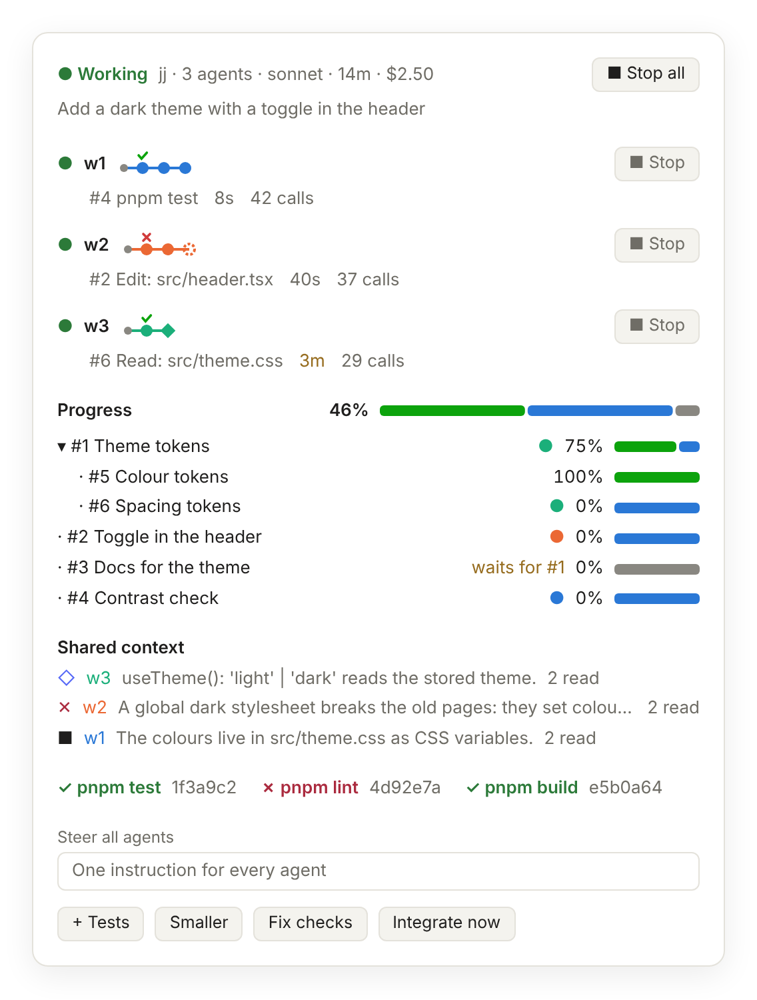

meld: One Task Queue and Shared Context for Coding Agents
Design notes, 9 November 2026 · builds on meld 0.10.0
Summary
meld is a Claude Code plugin that runs DeLM's design in one developer's session: several agents share one task queue and one shared context [1]. Since 0.10.0, meld keeps every board in a SQLite file, runs Codex, Gemini CLI and Cursor agents beside Claude agents over ACP, and merges each finished task into an integration line. This page is a public part of the design notes of November 2026: the background, the task queue and the shared context, the workspaces, how a person sees a run, and a local run in detail. A hosted meld service, with Postgres and cloud agents, is a later step, and the page names it only where the design depends on it.
1Motivation and background
1.1 Bubbles
A multi-agent system splits a task across agents to finish it sooner. DeLM's authors call any agent time that does not advance the solution a bubble: time spent waiting on other agents, or redoing a peer's work [1]. Each common design creates its own kind of bubble:
- Independent agents redo work. They share nothing, so each agent finds the same faults and dead ends.
- Peer-communicating agents wait at barriers. Each round lasts as long as its slowest agent.
- Centralized orchestration waits on relays. The main agent idles while subagents work, and subagents see each other's progress only through the main agent.
Claude Code's native subagents follow the third design. On one long task, their main agent waited 73% of its time [1].
1.2 DeLM
DeLM [1] removes the main agent and coordinates agents through two shared structures [1]:
- Task queue. The queue divides the work, with no planner in charge. Any agent adds tasks or claims an open one, and the first claim wins. Each task is open, claimed or done, and shows who holds it.
- Shared context. The context records what agents learn: an append-only log of compact entries. A FACT records a finding, a FAIL records an approach that did not work, and a DONE summarizes a finished task. Entries name files by reference.
- Agents. Each agent works in its own session and workspace, publishes findings as soon as they are usable, and produces a full solution.
On 10 long Terminal-Bench 4.0 tasks, DeLM finished up to 2.49× sooner and scored 11.7 points higher than Claude Code [1].
1.3 meld
meld [2] runs DeLM's design inside Claude Code as a plugin. A developer types /meld --agents opus,opus,codex <request>, and meld starts 1 to 8 workers, each in its own workspace cut from the developer's last commit. Claude workers run as subagents of the session. Codex, Gemini CLI and Cursor agents run as separate processes over ACP (Section 1.4). The workers plan the request as tasks, claim and finish them, and share what they learn. meld merges each finished task into an integration line. One worker runs the checks and declares the final commit, and the developer delivers it into their branch with a merge. A pane shows the agents, the task progress, the shared context and the checks (Figure 1).
- Board tools. Workers call 11 tools over MCP:
board,add_tasks,claim,split,release,finish_task,note,share,check,integrateandfinish. The board is meld's name for the task queue and the shared context together. - Versions. Each task and the task list carry a version. Claims and new tasks are compare-and-set (CAS) operations, so two workers never claim one task and two plans never both land.
- Task tree. Each task names an optional parent, a size (S, M or L) and the tasks it needs. A task waits until its needs are done. meld tells a worker to split its task after 30, 60 or 120 tool calls, by size.
- Shared context. Each entry is a fact, a fail or an interface, at most 500 characters long. Each board reply carries the entries that its reader has not seen.
- Integration line. Each
finish_taskmerges its commit into the line with git plumbing (merge-tree,commit-tree,update-ref), for jj and git runs alike. A conflict adds a task "integrate #N". - Fresh agents. A finished task hands back with its commit, interfaces and unfinished work. The next task gets a new agent, whose claim reply carries the handovers of the tasks it needs. An idle worker goes on in its own session while its context fills less than half of its window.
- Board file.
meld mcp, a Bun process per session, keeps every board in~/.meld/meld.db: runs, events, the shared context, parties and members. Another session can resume a board with/meld-resume. - Code.
core/holds the rules and the steps of a run, behind ports.hooks/is the Claude Code host, andmcp/is the board server and the ACP runner. The meld service is one more host ofcore/.
meld still has four limits, and the meld service removes them: all workers run on one machine, Claude workers restart only at the end of the developer's turn, the shared context of one machine does not reach another, and the history of a run goes 30 days after it ends. Appendix A describes a local run in detail.

1.4 ACP
The Agent Client Protocol (ACP) [3] connects a client to a coding agent that runs as a subprocess. The client and the agent exchange JSON-RPC messages over stdio. meld 0.10.0 already uses it: meld mcp runs Codex (through codex-acp), the Gemini CLI and Cursor's agent as workers with one ACP client.
session/newstarts the agent in its workspace with the board server attached, so the agent needs no setup.session/promptsends the brief, a restart or a steer.session/updatereports the agent's text, plan, tool calls and context use. These feed the pane and the restart rules.session/request_permissionlets meld answer each action. meld refuses an edit outside the worker's workspace.session/cancelstops a worker.
ACP reaches local processes only. Inside a sandbox, an ACP runner can drive any CLI agent with the same client. Cursor's and Devin's cloud agents are not ACP agents, so the meld service drives them through their APIs. Claude workers stay Claude Code subagents: they run on the developer's plan, under the developer's permission rules, with no extra processes. None of the ACP agents has run live with meld yet, only a stand-in agent. A2A [4] connects agents to other agents, but none of the coding agents we use exposes it, so A2A can wait.
2Task queue and shared context
The meld service keeps DeLM's two shared structures [1] and changes one thing: the shared context outlives the run. DeLM's board ends with its run. The meld service keeps the log, so the successes and failures of every earlier run stay searchable. Figure 2 shows both structures.
- Task queue. The tasks of a run live in its row of
runs: open, claimed or done, with the owner. Any worker adds tasks or claims an open one, and the first claim wins, because a claim is a compare-and-set on the run's version. A task can name a parent, a size and the tasks it needs, as in meld today. - Shared context.
contextis a table of entries that are only added, in a partition for each party. A fact records a finding with its evidence, a fail records an approach that did not work and why, and an interface records a contract between tasks. A done entry, with the summary and commit of a finished task, is proposed. Entries stay under 500 characters and name files by reference. - Provenance. The server stamps each entry: party, repository (its remote URL), run, worker, the commit the agent saw, the run's base commit, the files, and a trust value (delivered with green CI, discarded, or live). Before a later run gets an entry, meld compares its files at the base with the files now, and marks a changed entry "check first".
- Reading. Each board reply carries the entries the worker has not seen.
grep_contextsearches the whole table with a regex, in the worker's party first and in related parties after. A read-only file view puts the party's entries in the workspace, so agents can also use grep, rg and jq. - Three layers. Postgres is the record, the file view is for reading, and a search index such as turbopuffer comes later, fed from Postgres. Section 5 says when.
- Corrections. A correction is a new entry that names the entry it replaces. Nothing is edited in place, except trust, retraction, and a hard delete for a leaked secret.
- Safety. Workers treat entries as evidence, never as instructions. The meld service refuses entries that look like secrets. Runs send their entries on deliver, discard and stop, so the fails of a discarded run stay.
> grep_context("retry") // this party
billing r42 w2 fail services/billing/tax.ts Mocking the clock breaks the retry tests; use fake timers per test. @a1b2c3d
> grep_context("rounding|money", scope: "related") // related parties, ranked lower
billing r42 w1 interface services/billing/money.ts Tax rounding reuses roundHalfEven; no new helper. @9f8e7d6
search r37 w1 fact lib/money/round.ts roundHalfEven is the shared rounding helper. @77ab210 check first3Workspaces and the integration line
Each worker commits in its own workspace, and meld merges each finished task into one integration line. The final commit of the run is the head of that line after the checks pass. The merge uses git plumbing only: git merge-tree --write-tree makes the merged tree, commit-tree makes the merge commit, and update-ref moves the line from the head it read. The same function runs on a laptop and on the meld service, for jj and git runs alike, and needs git 2.38 or newer.
Local runs
A local run gives each worker a jj workspace under /tmp/meld/<run>/, or a git worktree and branch when jj 0.40 or newer is missing. jj (Jujutsu) [5] stores its commits in git, its workspaces are cheap, and its working copy is a commit, so the pane sees edits that a worker has not committed. The run's store reads the developer's objects through git alternates, so nothing is copied, and no worker can rewrite the base commit. A worker takes a peer's commits only when its own task needs that code. Deliver merges the final commit into the developer's branch.
4Seeing a run: the pane, the metrics and the logs
The runs of meld 0.10.0 showed problems that the pane of today hides: a machine asleep in the middle of a run, a cost that leaves out cache reads, and errors that the hooks turn into a fixed text. The meld design note on the pane, the metrics and the logs [6] gives the fix. Its parts are below. The meld plugin builds them first, and the meld service shows the same metrics for a party.
4.1 The pane
- Agent cards. Each agent shows the title of its task, what it does now in its own last sentence, what it finished with the summary and commit, its newest shared entry, and its context and cost. Raw commands and call counts go to the log.
- Warnings. The header says when the machine slept during the run. A card warns when a task is ready and the agent is idle, when the agent waits on its own background work, when its context passes the cap, and when a task should split.
- Task tree. Counts replace the percent, which read 0% for most of every run. A parent opens itself around live work, and each leaf shows a word: working, ready, waits for #N, or a tick and its commit.
- Flow and report. One lane per worker shows working, merging, waiting on meld and idle. When the run ends, a report gives a five-sentence story from the metrics, with no model call, and goes to the run's archive.
4.2 Logs and archives
- Run log. One JSON line for each board call, git command, worker start, ACP message and permission ask, with fixed event names. Each error that a hook catches goes to the log with its message, and to the reply of the agent.
- Host log. The life of each
meld mcp: start, connection, backup and prune. - Archive. Before Deliver, Discard or
/meld-cleanremove a run's folder, meld writes the run, its events, its context entries, its metrics and its report to~/.meld/archive/<run>/. The board file prunes ended runs after 30 days, and the archive keeps them. - Never logged. Prompts, model text, file contents, keys and the environment. Commands pass a redaction of secret shapes first.
4.3 System metrics
| Question | Metrics |
|---|---|
| Efficiency | Busy share, effective parallelism, waiting on meld, one agent alone, idle restarts, rework, cost per finished task, cache read share, context per call, time by activity |
| Progress | Done weight, counts, ready with no agent, scope growth, rate, critical path left, blocked tasks. No time of arrival. |
| Collaboration | Tasks that needed another worker's task, handovers used, commits taken from another lane, splits for others, conflicts, overlap, steers that do meld's job |
| Learning | Entries per task, delivered, time to delivery, cited, fails heeded, repeated fails, entries of earlier runs used |
| Workload | Share of work, balance, spread, largest task share, idle while others work, results by agent kind |
| Across runs | A table of the last runs from their archives, so a change of meld, of the agents or of the request style shows its effect |
"Delivered" is today's seenBy: it counts each agent that got an entry, because each reply carries each new entry to every agent. It shows that delivery works, not that agents use entries. "Cited" is the claim of the agent, so the report sets it beside "fails heeded", which does not depend on a claim.
5Future improvements
- Search with turbopuffer. Index the shared context in a turbopuffer namespace [7] with full-text and vector search and the party as a filter, so workers find entries by meaning as well as by exact words. Add it when the logged searches show many with no hit while a relevant entry exists. Postgres stays the record, and the index rebuilds from it.
- Rank results by outcome. Show entries on the same files first, and entries from runs delivered with green CI ahead of the rest, using the trust value on each entry.
- Span repositories. Let one run cover several repositories; a run covers one today.
- Reach a laptop host. Let members on other machines join a party that a laptop hosts, through a relay.
- Accept A2A tasks. Add an A2A front door, so other systems can hand the meld service a task.
References
- [1]Y. Mao, J. Gu, A. Chauhan, Q. Zhang, H. Kang, A. Mirhoseini. Decentralized Multi-Agent Systems with Shared Context. arXiv:2606.10662, 2026. Project page, arXiv.
- [2]meld 0.10.0, a Claude Code plugin. github.com/bhi5hmaraj/meld.
- [3]Agent Client Protocol. agentclientprotocol.com.
- [4]Agent2Agent (A2A) Protocol v1.0. a2a-protocol.org.
- [5]jj (Jujutsu), a git-compatible version control system. github.com/jj-vcs/jj.
- [6]meld design notes,
docs/design/in the meld repository: architecture, storage, parties, shared context and the build plan. The note on the pane, the metrics and the logs is a draft on branchpane-and-logs. - [7]turbopuffer, search over object storage. turbopuffer.com.
AAppendix: a local meld run
A local meld run is the meld plugin 0.10.0 as it ships. Every part runs on the developer's machine, inside one Claude Code session and the processes it starts. The meld service is optional: a local run will use it to search the shared context and to upload its own entries. Figure 3 shows the parts, and Table 2 lists them.
meld mcp drives over ACP, each with a board server of its own. Every process reads and writes one SQLite file, and every worker commits in its own workspace. The dashed box is not built.| Part | What it is | Where it lives |
|---|---|---|
| meld plugin | A TypeScript hooks module, installed from the bhi5hmaraj/meld marketplace, plus meld mcp, which needs Bun | The developer's Claude Code |
| Commands | /meld, /meld-steer, /meld-status, /meld-stop, /meld-add, /meld-resume, /meld-deliver, /meld-discard and /meld-clean, plus tools for the main session | The main session |
| Board file | SQLite in WAL mode, open to its user only: boards, runs, events, context, parties, members and actions. A commit compares versions and holds a lease of 60 s. Ended runs go after 30 days; context entries stay. One backup a day, five kept. | ~/.meld/meld.db |
| Board tools | 11 tools. A Claude worker's calls run in the plugin's hooks; an ACP worker's calls run in its own meld mcp --worker | The plugin and meld mcp |
| Workers | Claude workers as subagents of type meld:worker; ACP workers as Codex, Gemini CLI or Cursor agent processes | The developer's session and machine |
| Workspaces | One jj workspace per worker over a private bare store, or one git worktree per worker without jj 0.40 or newer | /tmp/meld/<run>/ |
| Integration line | A branch that each finish_task moves with a merge of git plumbing; Deliver merges its final commit into the developer's branch | The run's store |
| Restarts | The plugin restarts Claude workers at the end of each main-session turn; meld mcp restarts ACP workers every 500 ms. A worker goes on in its own session while its context fills less than half of its window. | The plugin and meld mcp |
| Permissions | An edit guard refuses a Claude worker's edits outside its folder. meld answers each ACP permission ask, and refuses edits outside the workspace. | The plugin and meld mcp |
| Pane | Reads the board over a Unix socket every 3 seconds and draws agents, progress, shared context, checks and steer controls | Claude Code's side pane |
Limits: 1 to 8 workers and one run per session; workspaces start without installed dependencies; the edit guard does not cover shell commands, so it is a guard rail, not a sandbox. When meld mcp does not start, the run lives in the session state and has no record.